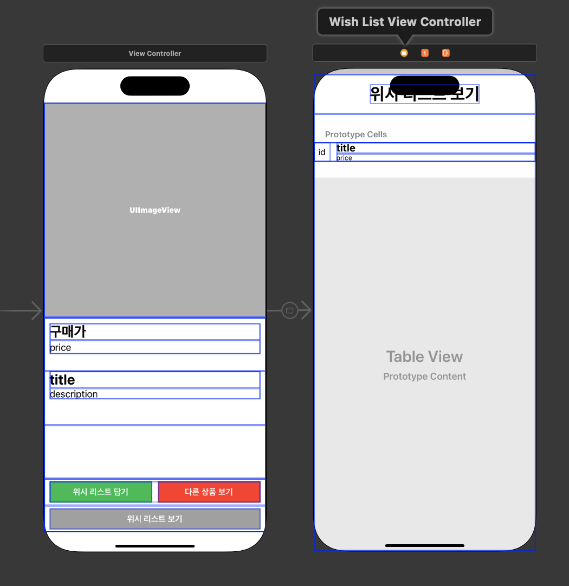
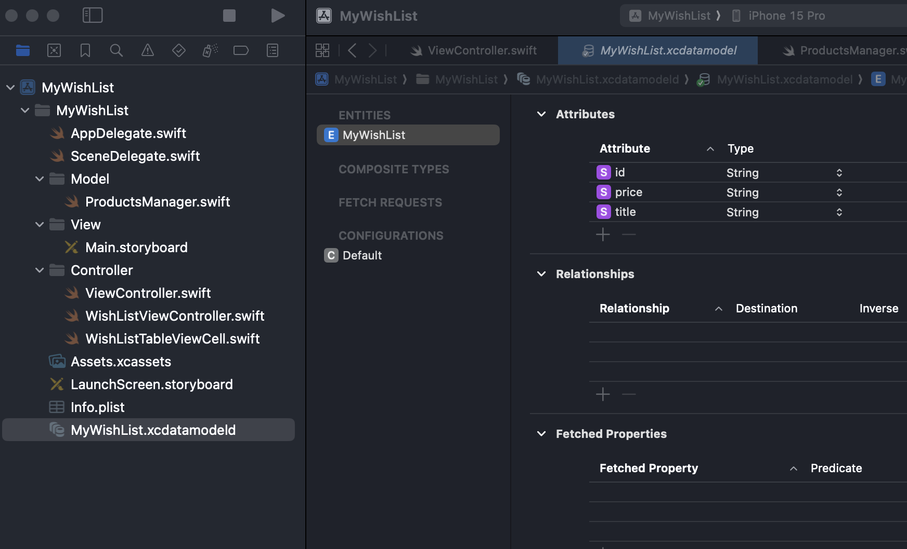
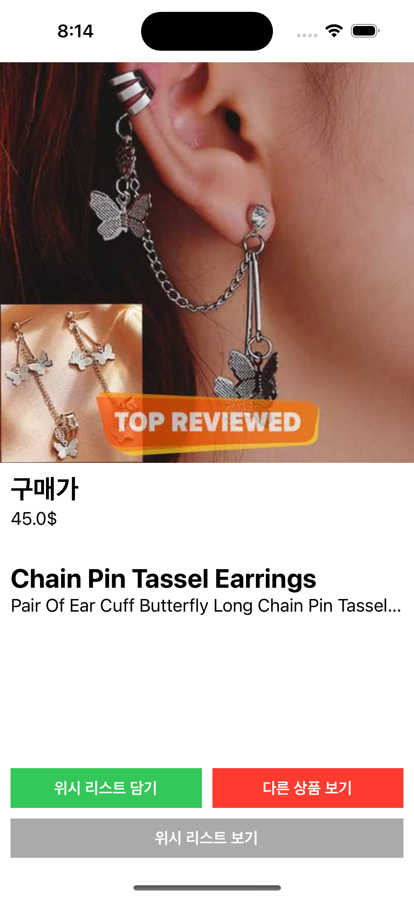
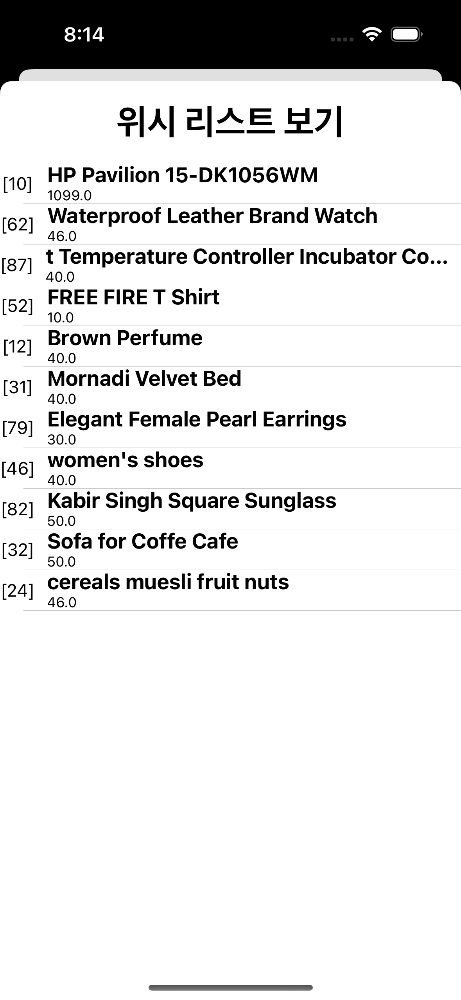
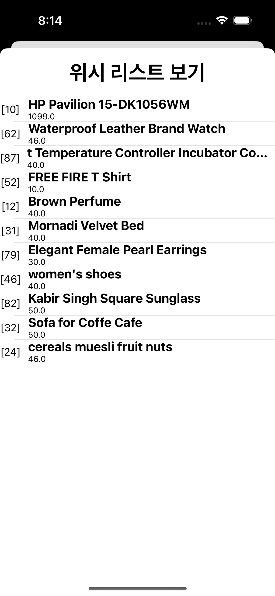

[내배캠] iOS 앱 개발 숙련 개인 과제 - WishList 앱 만들기 1
WishList 앱 만들기
- 네트워크 통신과 내부 저장소를 사용하여 WishList 앱 만들기입니다.
과제 요구사항
- 필수과제
- Lv1. 데이터 모델링하기
- Lv2. 위시 리스트 메인 페이지 구현
- Lv3. “위시 리스트 보기” 페이지 구현
- 선택과제
- Lv4. TableView에서 스와이프하여 삭제기능 구현
- Lv5. UIRefreshControl을 사용한 새로고침 구현
스토리보드를 사용해서 시작
- 코드베이스로 시작했다가 버튼 위치 조절하고 이것 저것 하다보니 개발 속도가 더뎌 스토리보드로 바꿔서 새로 시작했습니다. ㅠ
기능 구현
1. 스토리보드에 UI 구성하기
- 확실히 코드로 하나씩 하는것보다 빠릅니다. ㅠ ㅠ

2. Data 가져오기
- dummyjson 사이트에서 랜덤하게 데이터를 받아옵니다.
- 원래 주석처리된 부분처럼 사용했는데 경고 메시지가 많이 발생해서 튜터님 가이드에 따라 속성감시자로 수정했습니다.
getData()
func getData() {
let productID: Int = Int.random(in: 1...100)
if let url = URL(string: "https://dummyjson.com/products/\(productID)") {
print("url: \(url)")
//URLSessionDataTask를 사용하여 비동기적으로 데이터 요청
let task = URLSession.shared.dataTask(with: url) { (data, response, error) in
if let error = error {
print("Error: \(error)")
} else if let data = data {
do {
let product = try JSONDecoder().decode(ProductsManager.self, from: data)
self.currentProduct = product //데이터 설정
// DispatchQueue.main.async {
// self.productPriceLabel.text = String(product.price)
// self.productTitleLabel.text = product.title
// self.productDescriptionLabel.text = product.description
//
// }
// DispatchQueue.main.async {
// //이미지 URL 가져오기
// if let productUrlString = product.thumbnail as? String,
// let productImageUrl = URL(string: productUrlString) {
// // 이미지 데이터를 다운로드하여 이미지 뷰에 표시
// if let imageData = try? Data(contentsOf: productImageUrl) {
// //DispatchQueue.main.async {
// self.productImageView.image = UIImage(data: imageData)
// //}
// }
// }
// }
} catch {
print("Decode Error: \(error)")
}
}
}
task.resume()
}
}
속성감시자 설정
private var currentProduct: ProductsManager? = nil {
didSet {
//currentProduct가 nil이 아닌지 확인하고 종료하기
guard let currentProduct = self.currentProduct else { return }
//메인 스레드에서 UI 업데이트를 수행
DispatchQueue.main.async {
self.productImageView.image = nil
self.productTitleLabel.text = currentProduct.title
self.productDescriptionLabel.text = currentProduct.description
self.productPriceLabel.text = "\(currentProduct.price)$"
}
// 백그라운드 스레드에서 제품의 섬네일 이미지를 비동기적으로 가져오기
DispatchQueue.global().async { [weak self] in
// 제품의 섬네일 이미지 데이터를 가져와 UIImage로 변환
if let data = try? Data(contentsOf: currentProduct.thumbnail), let image = UIImage(data: data) {
// 가져온 이미지를 메인 스레드에서 productImageView에 설정하여 이미지 출력
DispatchQueue.main.async { self?.productImageView.image = image }
}
}
}
}
3. CoreData 저장하기
- coredata 설정이 데이터베이스 테이블을 만들고 컬럼을 추가하는 것과 비슷한 것 같다.
Entities 추가 및 Attributes 추가

AppDelegate.swift 파일 수정
- 처음 프로젝트 만들때 코어데이터를 추가하고 만들면 자동으로 코드가 추가됩니다.
- import CoreData, persistentContainer 메서드, saveContext 메서드를 추가합니다.
- core Data를 나중에 추가하는 경우 파일 추가에서 Data Model로 생성하면 됩니다.
import UIKit
import CoreData //필수
@main
class AppDelegate: UIResponder, UIApplicationDelegate {
//중간코드 생략
// MARK: - Core Data stack
lazy var persistentContainer: NSPersistentContainer = {
let container = NSPersistentContainer(name: "MyWishList") //core data 이름
container.loadPersistentStores(completionHandler: { (storeDescription, error) in
if let error = error as NSError? {
fatalError("Unresolved error \(error), \(error.userInfo)")
}
})
return container
}()
// MARK: - Core Data Saving support
func saveContext () {
let context = persistentContainer.viewContext
if context.hasChanges {
do {
try context.save()
} catch {
let nserror = error as NSError
fatalError("Unresolved error \(nserror), \(nserror.userInfo)")
}
}
}
}
viewController 수정
import CoreData //필수
class ViewController: UIViewController {
//UIApplication의 shared 인스턴스를 통해 AppDelegate에 접근하고 persistentContainer 속성 반환
var persistentContainer: NSPersistentContainer? {
(UIApplication.shared.delegate as? AppDelegate)?.persistentContainer
}
}
위시리스트 담기 버튼 수정
- alert를 사용하여 입력 확인, 중복 데이터인 경우 알림창을 띄우도록 하였습니다.
// MARK: - 위시 리스트 담기 버튼 선택
@IBAction func addToWishListButtonTapped(_ sender: UIButton) {
guard let product = self.currentProduct else { return }
// 위시리스트 담기 전 중복 확인
if checkId(String(product.id)) {
let alertController = UIAlertController(title: "중복 확인", message: "이미 위시 리스트에 포함되어 있습니다.", preferredStyle: .alert)
let cancel = UIAlertAction(title: "확인", style: .cancel, handler: { _ in return })
alertController.addAction(cancel)
present(alertController, animated: true, completion: nil)
} else {
//코어데이터에 저장
guard let context = self.persistentContainer?.viewContext else { return }
let myWishList = MyWishList(context: context)
myWishList.id = String(product.id)
myWishList.title = product.title
myWishList.price = String(product.price)
//저장
try? context.save()
let alertController = UIAlertController(title: "위시 리스트 담기", message: "해당 상품을 위시 리스트에 담았습니다.", preferredStyle: .alert)
let addToWishList = UIAlertAction(title: "확인", style: .default, handler: { _ in return })
alertController.addAction(addToWishList)
present(alertController, animated: true, completion: nil)
}
}
중복 ID 체크
// MARK: - 중복 ID 체크
func checkId(_ id: String) -> Bool {
//true 중복, false 중복아님
guard let context = self.persistentContainer?.viewContext else { return true }
let request = MyWishList.fetchRequest()
guard let myWishList = try? context.fetch(request) else { return true }
if myWishList.filter({ $0.id == id}).count != 0 {
//중복
return true
} else {
//중복 아님
return false
}
}
4. 다른 상품 보기
// MARK: - 다른 상품 보기 버튼 선택
@IBAction func otherProductButtonTapped(_ sender: UIButton) {
self.getData()
}
5. 위시리스트보기
- viewController와 별개로 WishListViewController파일을 추가하였습니다.
import CoreData
class WishListViewController: UIViewController {
// MARK: - 코어데이터를 사용하기 위한 설정
var persistentContainer: NSPersistentContainer? {
(UIApplication.shared.delegate as? AppDelegate)?.persistentContainer
}
var productList: [MyWishList] = [] //코어데이터를 가져와 배열에 담기
@IBOutlet weak var wishListTableView: UITableView!
override func viewDidLoad() {
super.viewDidLoad()
wishListTableView.dataSource = self //데이터소스 설정
getCoreData() //데이터가져오기
}
//나머지 코드 생략
}
코어데이터 가져오기
// MARK: - CoreData에서 데이터 가져오기
func getCoreData() {
guard let context = self.persistentContainer?.viewContext else { return }
let request = MyWishList.fetchRequest()
if let products = try? context.fetch(request) {
self.productList = products
}
}
tableView Data Source 추가
extension WishListViewController: UITableViewDataSource {
func tableView(_ tableView: UITableView, numberOfRowsInSection section: Int) -> Int {
return productList.count
}
func tableView(_ tableView: UITableView, cellForRowAt indexPath: IndexPath) -> UITableViewCell {
let cell = tableView.dequeueReusableCell(withIdentifier: "WishListTableViewCell", for: indexPath) as? WishListTableViewCell
let id = "[" + (productList[indexPath.row].id ?? "") + "]"
let title = productList[indexPath.row].title
let price = productList[indexPath.row].price
cell?.productIdLabel.text = id
cell?.productTitleLabel.text = title
cell?.productPriceLabel.text = price
return cell ?? UITableViewCell()
}
}
실행화면
- 메인화면, 다른상품보기, 위시리스트 확인 화면입니다.

 

실행영상
마무리
- 가격에 , 추가해야하는데 빼먹어버렸다. 내일 다시 추가할 예정
- 필수 과제까지는 완료했는데 선택과제도 내일 다시 구현 에정
- ⭐️⭐️ 데이터가져오기 및 코어데이터 사용은 강의 예제와 동일해서 많이 사용해보고 익숙해져야겠다. ⭐️⭐️